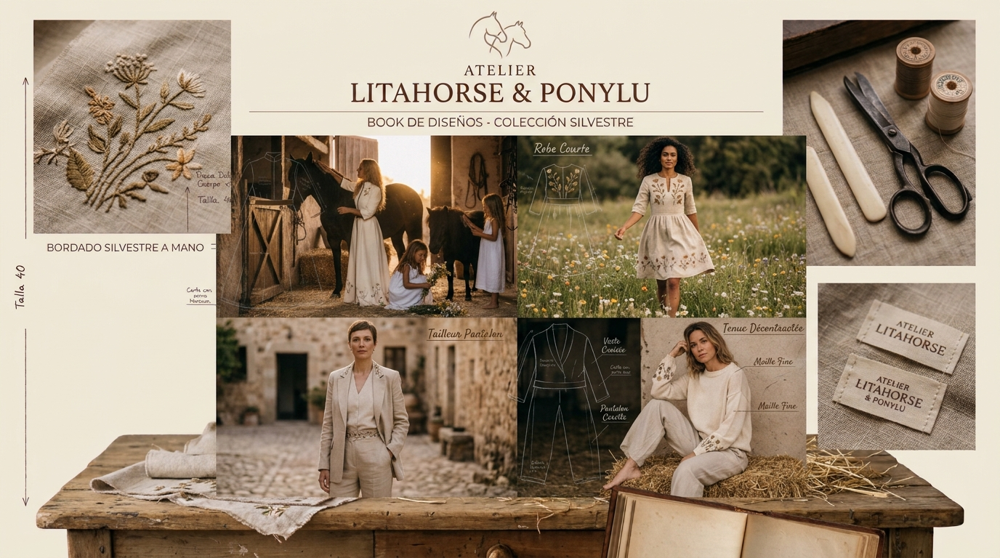
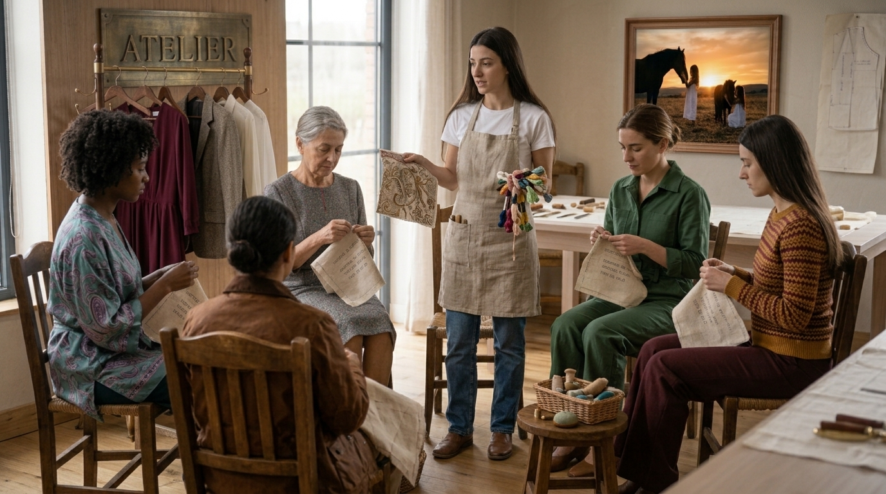
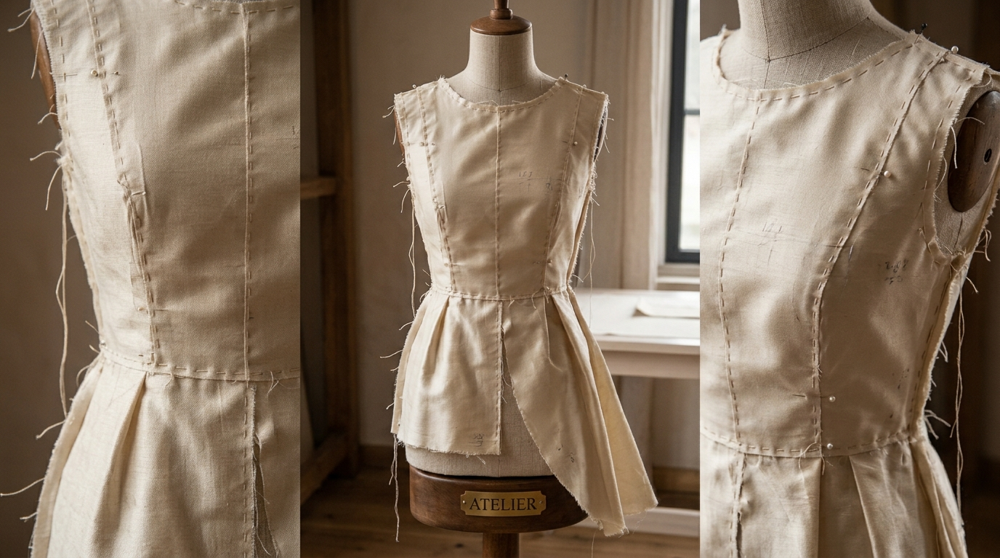
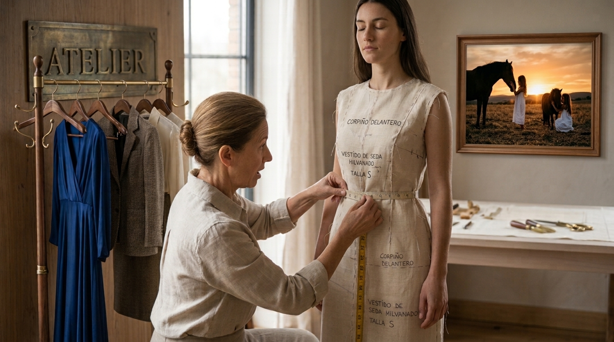

Prendas de diseño
Piezas prediseñadas y confeccionadas por nuestro equipo, en pequeñas colecciones.
Ver colecciónDiseñamos prendas femeninas con alma artesanal: piezas de colección creadas por nosotras y ropa confeccionada a medida para acompañarte de verdad.
Explorar la tienda Conócenos
Desde nuestro taller central en Donostia, creamos moda femenina que une la elegancia atemporal con el cuidado de cada detalle. También compartimos el placer de coser en nuestros cursos y talleres.
Descubre las piezas de temporada, pensadas con calma y confeccionadas en nuestro taller.
Piezas prediseñadas y confeccionadas por nuestro equipo, en pequeñas colecciones.
Ver colecciónUna prenda pensada contigo, adaptada a tu estilo, tus medidas y tu manera de sentirte.
Pedir citaCursos cercanos y prácticos para descubrir nuevas técnicas y disfrutar del proceso.
Ir al blog

